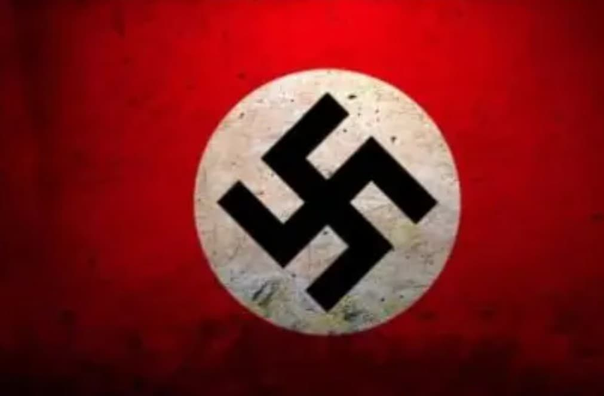

La svastika est un symbole ancien, présent en Asie depuis des millénaires. Elle représente la paix, la protection et la spiritualité. Ce symbole n’a aucun lien avec la croix gammée nazie avant le XXe siècle.
Le parti nazi détourne ce symbole pour en faire un emblème politique, transformant un signe spirituel en symbole de haine, de persécution et de guerre.

En Chine, au Japon, en Corée et en Inde, la svastika est un symbole positif. On la retrouve dans les temples, les traditions bouddhistes et les organisations humanitaires comme la Red Swastika Society.
Elle symbolise la chance, la paix, l’harmonie et la protection. Rien à voir avec l’idéologie nazie.

Au XXe siècle, le parti nazi reprend la svastika pour en faire son emblème. Le symbole change totalement de sens : il devient associé à la violence, au racisme, à la guerre et à la persécution.
Ce détournement est l’un des plus radicaux de l’histoire : un symbole spirituel ancien devient un signe de terreur moderne.

En France, le Moyen Âge repose sur des faits historiques : Jeanne d’Arc, les chevaliers, les chroniques, les archives.
Dans la propagande nazie, le “chevalier germanique” est une invention graphique. Un héros imaginaire destiné à glorifier le régime, sans réalité historique.
La comparaison montre la différence entre un Moyen Âge réel et un Moyen Âge inventé pour manipuler.

Les éclairs SS ne viennent pas du Moyen Âge. Ils ont été créés au XXe siècle pour représenter la Schutzstaffel.
Leur forme “runique” est une récupération graphique, pas un héritage historique. Ils incarnent la violence organisée, la répression et la terreur d’État.